After completing this lesson, you'll be able to:
In this lesson, you will:
MCP tool definitions are intentionally designed to be readable by AI models. Each tool has a name, natural language description, and a structured input schema, all of which an AI needs to understand what a tool does and how to use it. Rather than hardcoding which tool to call, your workspace can let an AI model make that decision at runtime using user input data and a list of available MCP tools.
First, an MCPCaller uses List Tools to retrieve the full set of tools available on an MCP server. An AI connector takes the tool list and any other data as input, evaluates the data and tool list to select the most appropriate tool to call, then outputs the selected tool and any structured input for the MCP tool call. Next, a second MCPCaller uses Call Tool to execute the right tool, passing in the inputs from the AI output. The result of the second MCPCaller returns a structured output that the rest of the workspace may continue processing.
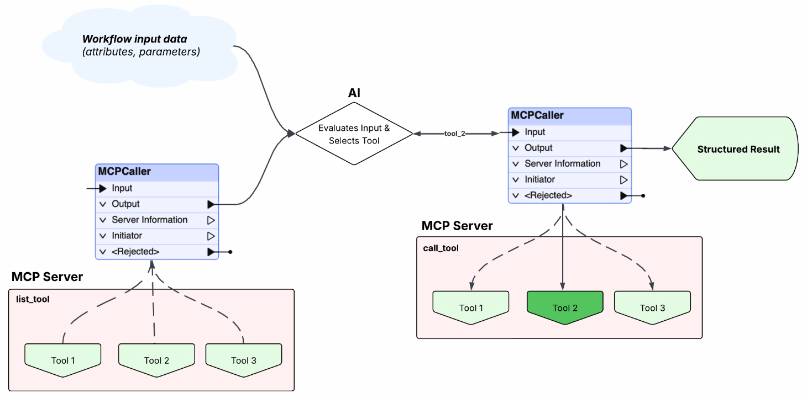
This approach means the workspace doesn't need an MCPCaller for each MCP tool, nor does it need to be updated each time a new tool is added to the MCP server. AI enhances the workflow by dynamically discovering and evaluating tools, making it adaptable as the MCP server evolves.
Frank has already used FME's MCPCaller to connect to an MCP server, list it's available tools, and call a tool. However, rather than hardcoding tool calls into an MCPCaller which requires multiple MCPCallers, he is going to use AI to analyze a user prompt and dynamically select and call an MCP tool in his workspace. Eventually, Frank can integrate this workspace alongside his future utility data MCP server to provide real-time weather metrics with some of the utility data workflows.
In this exercise, you will:
The easiest method to take user input to control how the workspace runs is with user parameters.
Get the current weather forecast for Vancouver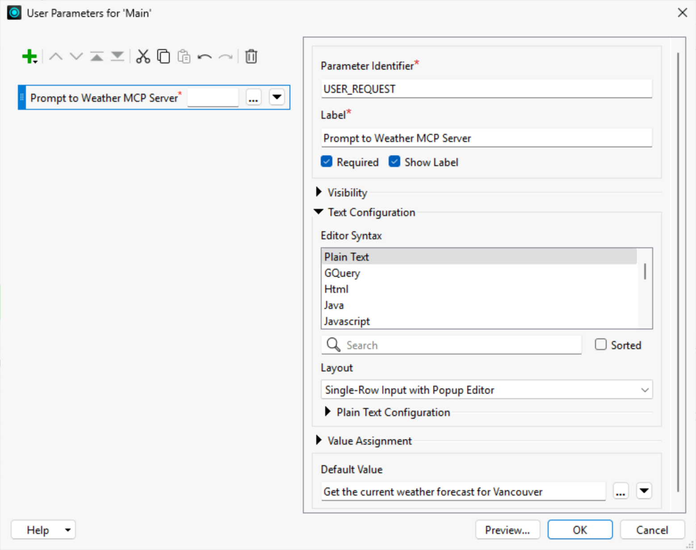
For the dynamic tool selection workflow, you want the List Tools MCPCaller only to return one record with information about all the tools. With individual records for each tool, a downstream AI connector can only analyze one tool at a time.
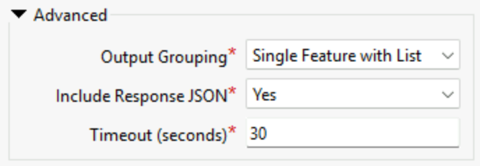
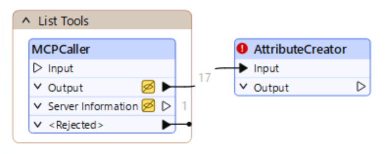
| Output Attribute | Value |
| user_request | $(USER_REQUEST) |
| today | @DateTimeFormat(@CurrentDateTime(),%Y-%m-%d) |
| all_mcp_tools | _json_response |
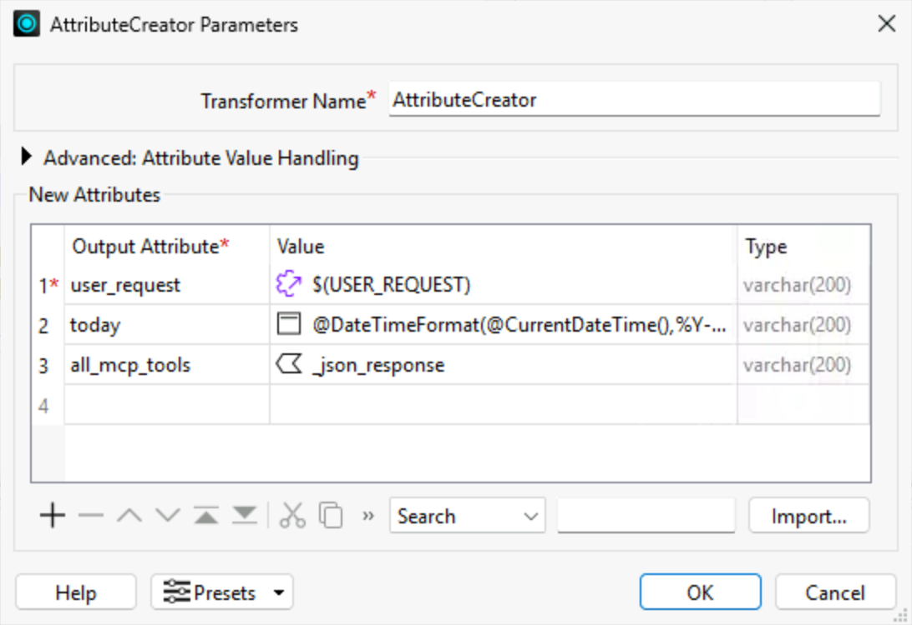
After the AttributeCreator, you will use an OpenAIConnector to have an AI model analyze the available MCP tools and select the best one to use for the user's input request.
You are selecting a weather MCP tool based on a user request.
Available tools, including descriptions and input schemas:
@Value(all_mcp_tools)
User request:
@Value(user_request)
Your task:
Select the most appropriate weather tool and construct the tool_input that matches the selected tool's input schema exactly.
Rules:
- You MUST select tool_name exactly from the provided tool list.
- You MUST provide a tool_input that matches the input schema of the selected tool.
- Do not rename tools or invent new ones.
- Vancouver coordinates are latitude: 49.2827, longitude: -123.1207, timezone: "America/Vancouver".
- Use these coordinates for any location-based tool unless the user specifies a different location.
- If you do not know the geographic coordinates from the place name from the user request, estimate the coordinates from your knowledge to format the tool input.
- For weather_archive, today's date is @Value(today) — use a reasonable past date range.
- Do not use the geocoding tool.
Schema rules:
- tool_input must strictly follow the input schema of the selected tool.
- Preserve object structure and nesting exactly.
- Include all required fields.
- Do not add fields not defined in the schema.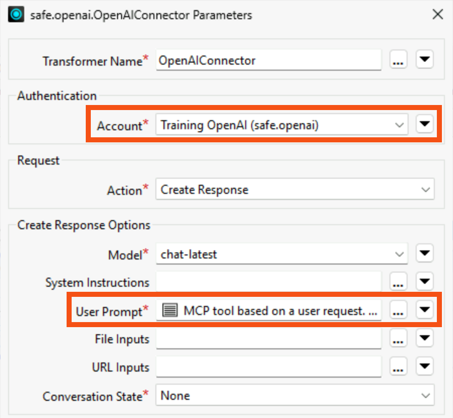
{
"type": "object",
"properties": {
"tool_name": {
"type": "string"
},
"tool_input": {
"type": "object",
"additionalProperties": true
}
},
"required": ["tool_name", "tool_input"],
"additionalProperties": false
}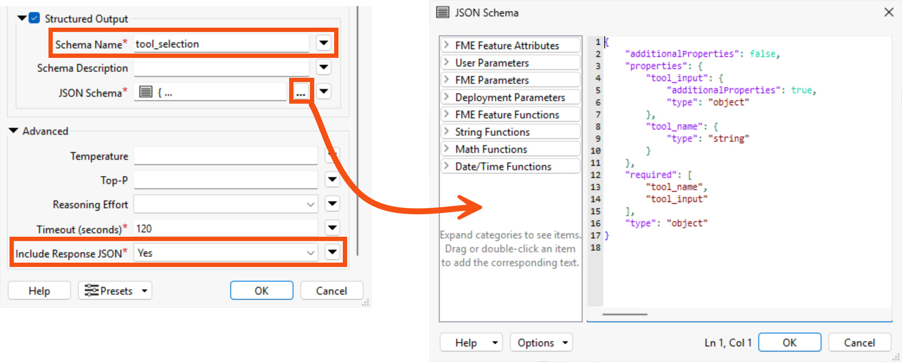
To send output from the OpenAIConnector as attributes to the Call Tool MCPCaller, you need to parse the output JSON into attributes.
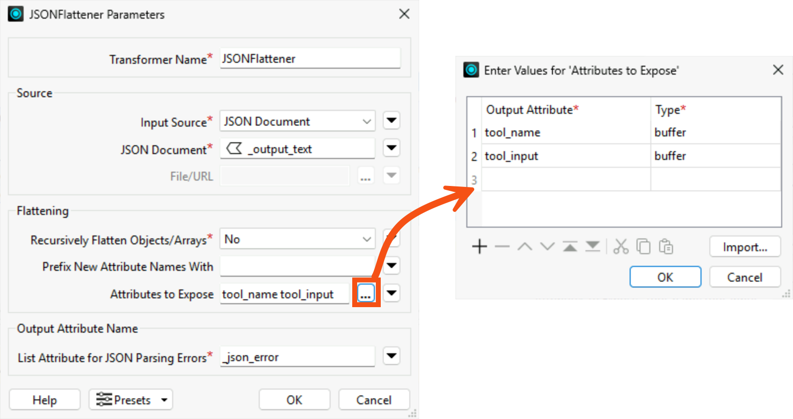
Now, reference the tool_name and tool_input attributes with output from the OpenAIConnector to the MCPCaller that calls the MCP tools.
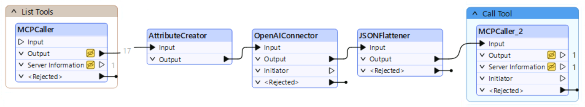
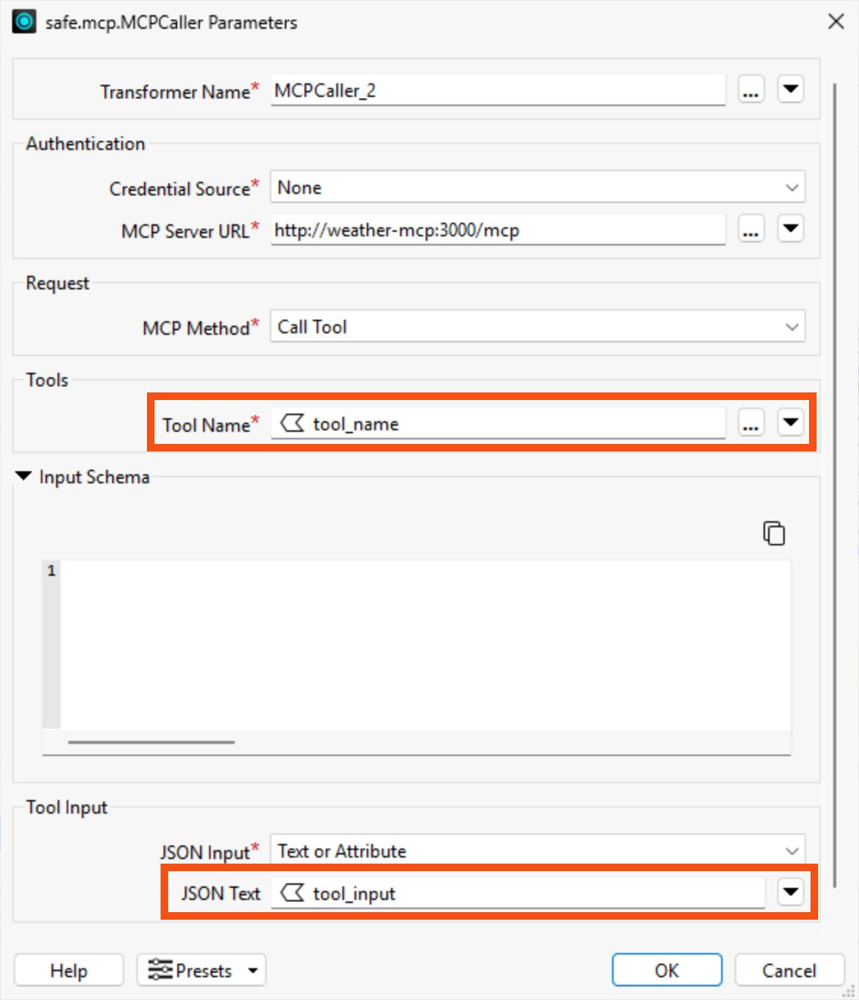
The MCPCaller will return structured JSON containing the MCP tool's response. To extract specific values into attributes, you need to parse the JSON.
json["content"][0]["text"].
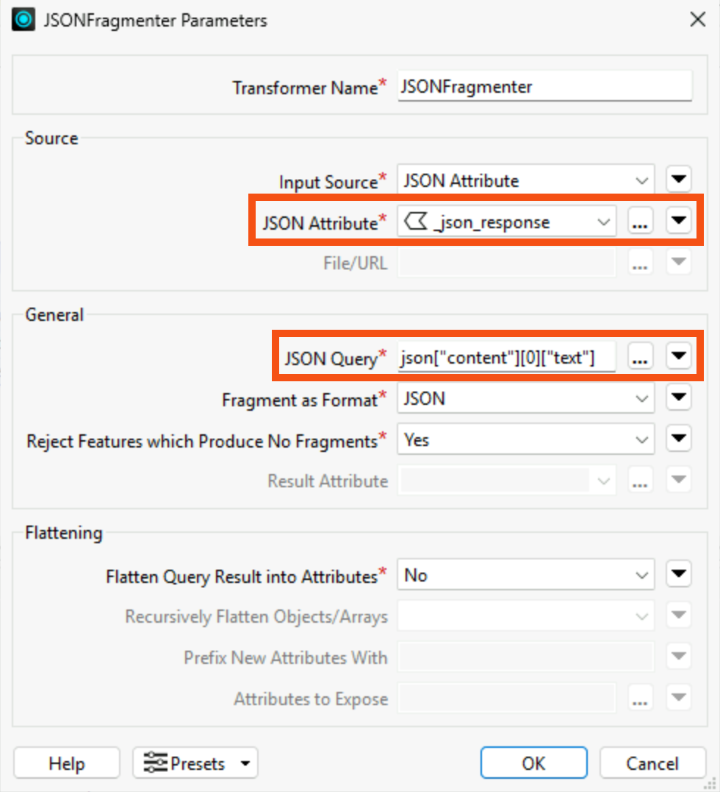
You've successfully connected to Frank's weather MCP server, listed the server's available MCP tools, and called tools, both statically and dynamically. Throughout this exercise, you used FME as an MCP client, where FME was the application connecting to, calling, and receiving MCP responses from the MCP server.